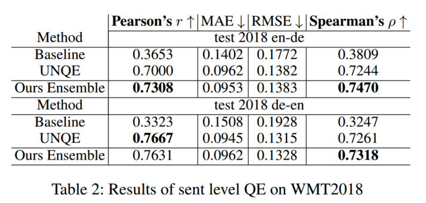

论文地址：https://arxiv.org/pdf/1807.09433.pdf
这篇文章描述了2018 WMT Quality Estimation中效果最好的系统。作者认为他们的工作有以下几项主要贡献：
- 提出了一个新的经过预训练的基于Bi-Transformer的prior-knowledge模型，且可以用于APE（auto post-editing）
- 提出了3种mis-match feature
- 用Bi-LSTM通过输入特征进行quality estimation
- 提出了一种在计算流图中使用BPE的方法
Quality Estimation的传统方法和形式定义
一种传统方法是把预测sentence-level得分看做是一个constraint regression问题，把预测word-level标签看做是sequence labeling问题；然后先提取特征，再对翻译质量进行预测。
从统计学的角度，可以把翻译系统形式化地看成是，其中表示源句的token sequence，表示译句，是表示encode过的源句的隐变量。因此，可以把看成是encoder，看成是decoder。
在QE任务中，MT系统是未知的，输入数据是，其中是未知系统的输出，是对 post-edit之后的结果。一般来说，至少可以在两个层面对进行评价：
- word-level：根据和对中的token生成的OK/BAD标签
- sentence-level：根据和之间的差异计算HTER分数
因此可以假定训练数据实际上是，其中是HTER，是OK/BAD标签。QE任务即训练回归模型和sequence labeling模型。
（这项工作的架构类似于predictor-estimator的架构，但是两边是共同训练的，因此效果得到提升。）
Conditional Language/Feature Extration Model: Bilingual Expert Model
作者首先形式化地描述了如何训练这个模型（实际上我没太看懂）。
通过贝叶斯公式，可以写出隐变量的后验分布公式：
由于无法直接计算，因此用分布通过最小化KL散度来逼近实际的后验：
可以把上述目标函数换成下面这个（我猜这和KL散度的性质有关，但我不会）：
$$\max{\mathbb{E}_{q(\mathbf{z} | \mathbf{t}, \mathbf{s})}[p(\mathbf{t} | \mathbf{z})] - D_{KL} (q(\mathbf{z} | \mathbf{t}, \mathbf{s}) || p(\mathbf{z} | \mathbf{s}))}$$这个新目标函数的优点是不需要直接估计机器翻译模型。（至少在这里仍然把MT和QE区分开了，但在实际模型架构中几乎是一样的。）而且可以直接计算；左边的期望似然实际上是一个VAE（variational autoencoder），可以进行估计：
$$\max{\mathbb{E}_{q(\mathbf{z} | \mathbf{t}, \mathbf{s})}[p(\mathbf{t} | \mathbf{z})] \approx p(\mathbf{t} | \mathbf{\tilde{z}})}, \quad \tilde{z} \sim q(\mathbf{z} | \mathbf{t}, \mathbf{s})$$下面只需通过Transformer构造出和这两个概率。
Transformer部分模型架构如下图右侧部分：
其中有三个主要模块：
- self-attention encoder：encode源句
- 前向+后向self-attention encoder：encode译句
- reconstructor：重新生成译句
（这架构和Transformer几乎没有区别……除了译句encoder换成了双向的）
将和进行如下分解：
$$p(\mathbf{t} | \mathbf{z}) = \prod_{k} p(t_k | \overrightarrow{\mathbf{z}_k}, \overleftarrow{\mathbf{z}_k})$$ $$q(\mathbf{z} | \mathbf{t}, \mathbf{s} = \prod_{k} q(\overrightarrow{\mathbf{z}_k} | \mathbf{s}, \mathbf{t}_{< k}, \overleftarrow{\mathbf{z}_k} | \mathbf{s}, \mathbf{t}_{> k})$$三种特征
在训练完expert model之后，可以从中提取句对中的3种特征：
- 隐变量：它应当包含了源句和译句的所有信息，以及正确翻译第k个token所需的语义信息
- token embedding：对于第k个token，使用它前后token的embedding，即$(\mathbf{e}_{t_{k-1}}, \mathbf{e}_{t_{k+1}})$
- 分类分布：令为类别数量与词表大小相等的分类分布（categorical distribution），则
于是可以构造4维的mis-matching feature：
$$\mathbf{f}_k^{mm} = (\mathbf{I}_{k, m_k}, \mathbf{I}_{k, i_{max}}, \mathbf{I}_{k, m_k} - \mathbf{I}_{k, i_{max}}, \mathbb{I}_{m_k \neq i_{max}})$$其中是翻译输出中的第k个token，为expert model预期的输出token，是概率分布。
（这预期输出token基本上就相当于是自己翻译了一遍吧……）
Bi-LSTM Quality Estimation
实验中发现encoder self-attention、Bi-Transformer和Bi-LSTM+CRF的效果都不如普通的Bi-LSTM，可能是因为训练数据不够多。因此直接使用了Bi-LSTM。
Bi-LSTM输入expert model生成的feature：
$$\overrightarrow{\mathbf{h}_{1:T}}, \overleftarrow{\mathbf{h}_{1:T}} = \text{Bi-LSTM}(\{\mathbf{f}_k\}_{k=1}^T)$$然后通过回归方法预测HTER（因为HTER是整个句子的评分，因此只考虑Bi-LSTM的最后两个状态）：
$$\arg\min{\lVert h - \text{sigmoid}(\mathbf{w}^T [\overrightarrow{\mathbf{h}_{T}}, \overleftarrow{\mathbf{h}_{T}}]) \rVert^2_2}$$通过sequence labeling方法预测词的标签（其中XENT是cross entropy）：
$$\arg\min{\sum_{k=1}^T \text{XENT}(y_k, \mathbf{W}[\overrightarrow{\mathbf{h}_{k}}, \overleftarrow{\mathbf{h}_{k}}])}$$计算流图中的BPE
对于sentence-level QE，由于HTER是全局参数，显然使用BPE和不使用BPE没有太大的差别。但是对于word-level QE，BPE下序列的长度（原序列长度）。因此作者提出了一种对一个词的所有subword unit的feature进行平均的方法：将BPE信息存储在一个的稀疏矩阵中，其中仅当第j个subword unit属于第i个词时，。此时就可以通过矩阵乘法计算平均后的feature，这使得计算流图是可微的。
通过这一方法使用BPE后，效果有一定的提升。
实验结果
预处理：筛选长度<=70且长度比在1/3~3范围内的句对
参数：
- Bi-Transformer中每个模块的层数为2
- feed-forward层的大小为512
- 8 head self-attention

总的来说这一模型大获全胜。
在实验中，即使只留下mis-match feature（而去掉另外两种），结果仍然是比较好的（皮尔森相关系数r降低了约0.04）。（这不禁令人怀疑QE和MT到底有什么区别。）